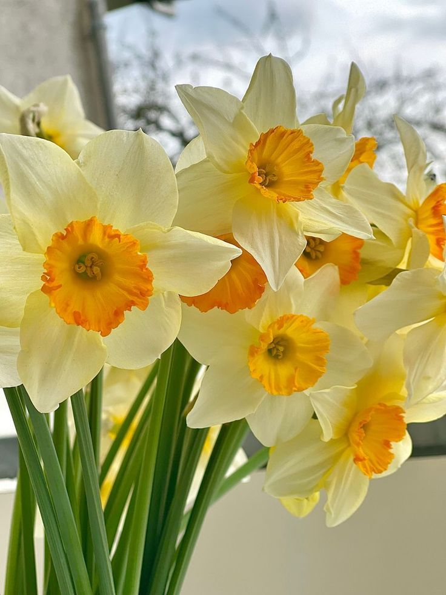

Narcisele (Narcissus) sunt plante perene cunoscute pentru florile lor elegante și parfumate. Originare din Europa și Africa de Nord, narcisele au flori de obicei galbene sau albe, cu o trompetă centrală distinctivă. Cresc din bulbi și preferă soluri bine drenate și locuri însorite sau parțial umbrite. Bulbii se plantează toamna pentru a înflori în primăvară. Narcisele sunt populare în grădini și aranjamente florale, simbolizând renașterea și noile începuturi.
